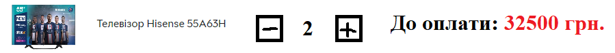
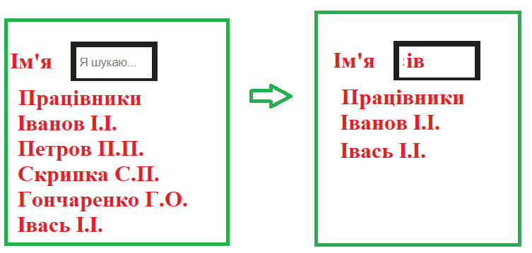
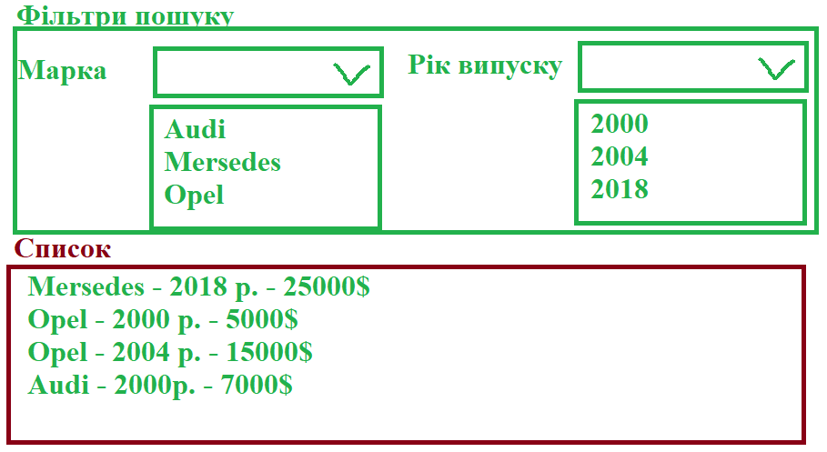
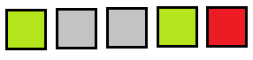
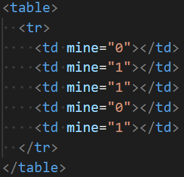
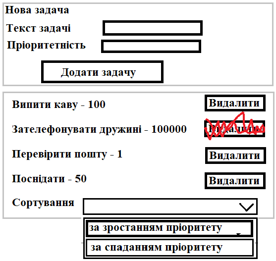

- Задача 1
Розробити елемент для вводу кількості вибраного товару за зразком (мінімальна кількість 1, максимальна кількість 10, при перевищенні блокувати кнопку)
 - Задача 2
Динамічний пошук. Є список працівників і поле пошуку. При введенні відображаються усі, які містять вказаний фрагмент
 - Задача 3
Дано список автомобілів (марка, рік випуску, ціна). Сформувати елементи для фільтрування з використанням випадаючого списку (контент цих випадаючих списків сформувати у залежності від переданого списку).
 - Задача 4
Ловля тараканів. Зображення тараканів з’являються в центрі контейнера і випадковим чином «розбігаються» у випадкових напрямках. При кліку на зображенні таракана його рух припиняється і виводиться зображення сплячого таракана.
- Задача 5
Однорядковий сапер. Однорядкова таблиця, до клітинок якої додано інформацію про наявність міни (використати атрибути). Спочатку клітинки сірі. При натисненні на клітинку аналізується чи є там міна і тоді колір стає червоним, якщо немає – зеленим. Додати можливість відкриття усіх сусідніх незамінованих клітинок при відкритті незамінованої клітинки.
  - Задача 6
Розробити ToDo менеджер. Користувач вводить текст задачі та пріоритетність. Відображається список доданих задач з можливістю видалення задач та сортування за пріоритетністю.
